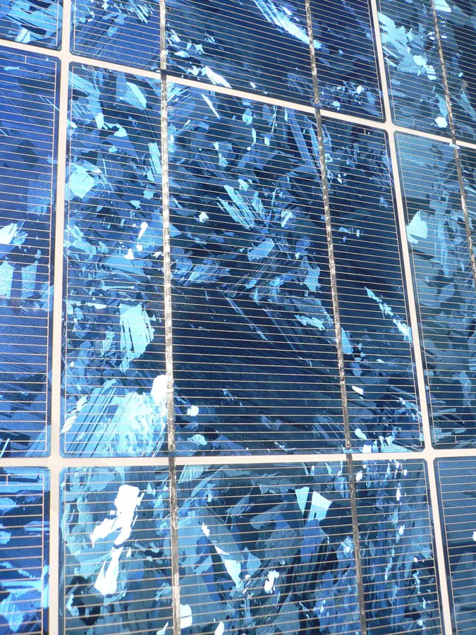

01
Gestores y recicladores de FV
Plantas de tratamiento que buscan una salida de valor para la fracción de células de los módulos fotovoltaicos.
SilverSunshine recupera plata metálica y silicio de alta pureza de la fracción de células de paneles solares, y transforma el resto del proceso en un coagulante industrial. Economía circular aplicada al sector fotovoltaico.
El fin de vida de los primeros grandes parques solares y los recortes de producción generan un residuo complejo que hoy apenas se recupera. SilverSunshine trabaja con los actores clave de esa cadena.
Plantas de tratamiento que buscan una salida de valor para la fracción de células de los módulos fotovoltaicos.
Empresas del sector con residuo de producción o final de vida útil que valorizar.
Compradores industriales de plata y silicio de alta pureza como materia prima secundaria.
Actores vinculados a proyectos de economía circular e innovación industrial.
Nuestro proceso separa la fracción de células y recupera sus materiales de valor, aprovechando también otras corrientes para generar un segundo producto industrial.
Módulos y recortes de producción llegan como fracción de células a valorizar.
Tecnología desarrollada por SilverSunshine para separar los materiales de valor de la célula.
Se obtiene plata metálica y silicio de alta pureza como materias primas secundarias.
Otras corrientes del proceso se transforman en un coagulante industrial a base de sales de aluminio.
Cada corriente del proceso se convierte en un producto industrial con comprador definido.
Plata metálica de alto valor recuperada de la fracción de células fotovoltaicas, lista como materia prima secundaria para la industria.

Silicio de alta pureza recuperado del proceso, con aplicación potencial en nuevas cadenas de valor industrial.
Coagulante a base de sales de aluminio obtenido de otras corrientes del proceso, aprovechando la valorización de forma integral.
SilverSunshine está desarrollando y validando su proceso propio de separación y recuperación a escala preindustrial, como paso previo a la planta industrial. Buscamos socios de residuo, industriales y financieros para acompañar esta fase.
Hablar del proyectoCada tonelada de residuo procesada es una tonelada que no va a vertedero y materia prima que no necesita extraerse de nuevo.
Un residuo complejo se convierte en materias primas secundarias con valor industrial, cerrando el ciclo del panel fotovoltaico.
La plata y el silicio recuperados reducen la necesidad de extracción y refino primario.
Ninguna corriente se desperdicia: incluso los subproductos se transforman en un coagulante industrial útil.
SilverSunshine desarrolla una solución de economía circular para valorizar residuos de paneles fotovoltaicos. Nuestro proceso recupera plata metálica y silicio de alta pureza a partir de la fracción de células, y aprovecha otras corrientes para generar un coagulante industrial.
El objetivo es transformar un residuo complejo en materias primas secundarias con valor industrial, con un enfoque estrictamente B2B: menos memoria de ingeniería, más solvencia técnica y una narrativa clara para nuestros interlocutores.
Un proceso propio validado en laboratorio, camino a planta piloto.
Pensado desde el origen para integrarse en cadenas de suministro B2B.
Cada producto del proceso tiene un destino de valor, sin residuo perdido.
Cuéntanos quién eres y qué necesitas. Respondemos personalmente a cada solicitud B2B.